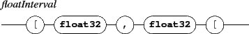

Next: 10.1.1 Using the master
Up: 10. Synchronization
Previous: 10. Synchronization
Contents
Index
10.1 Synchronization modes
Synchronizing a slave component A to a master component B has the following effect:
- A position (x) is modified to match the B time position corresponding to A date.
- depending on the optional syncStretch option, A width and/or height is modified to match the corresponding B dimension (see below).
- depending on the optional syncPos option, A vertical position (y) is modified. Note that the y position remains free and could always be modified using a dy message.
- if A date has no graphic correspondence in B mapping (the date is not mapped, or out of B mapping bounds ), A won't be visible.

Subsections
Grame - INScore project